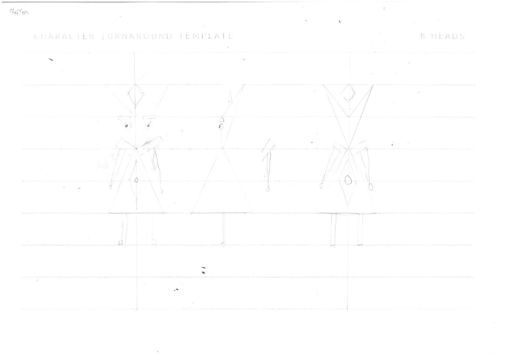

Low Poly Character
Overview
This project revolves around the development of a low-poly character. This character can be used for any form of media. I plan to create this character
either a human, monster or both at the same time, depends on how I like the final product.
End Users
The end users for this project are for children and teenagers around the age range of 9-17. Preferrably, they can be male too. These end users
prefer simple looking characters and sometimes goofy looking things. They also wish to see more movements and animations in order to be kept engaged.
Requirements
Circular shape
Simple black and white
Medium - small size
Not too detailed
Simple black line
May have small simple teeth
Human/Monster combination
Could be deformed or simplified for uniqueness and originality
Simple animations, with legs and rigging
Implications
I prioritize this in order to make my character look good for gameplay as well as making the player feel pleased to the eye. I addressed this by using color
theory in order to know which combinations look pleasing to the eye, as well as being aware on where I color the parts of the character for their appearance.
This helps make my character look pleasing to the eye despite other visual characteristics like the shape of the body.
This is about how I expect my character to function and if it works well or not. I addressed this by using simple concepts can make it better for the way my character works and not by using more
difficult concepts. I plan for the primary movement controls like WASD to function first as well as the animations before considering other extra additions.
The way my character functions should be simple and easy for everyone to learn during gameplay. I addressed this by planning the use of simple controls like a few inputs and not something
that should be overdone. A simple singular keybind is only needed for the amount of controls for one output.
This is about the originality of a piece of creation coming from one's mind. This rule applies to everyone including me during a creation. I addressed this by making
sure that it doesn't look like an existing character. I basically can use little to no reference from other creations in order to have the most originality.
Development
